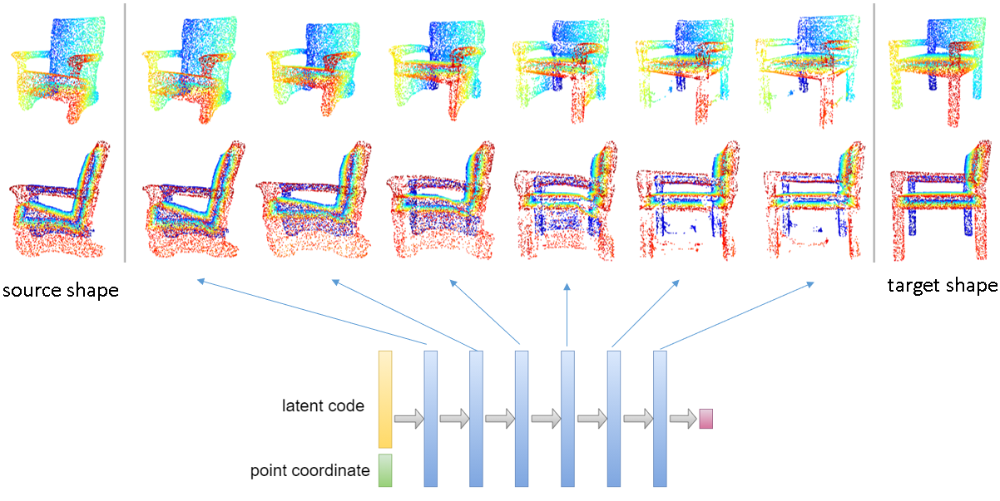
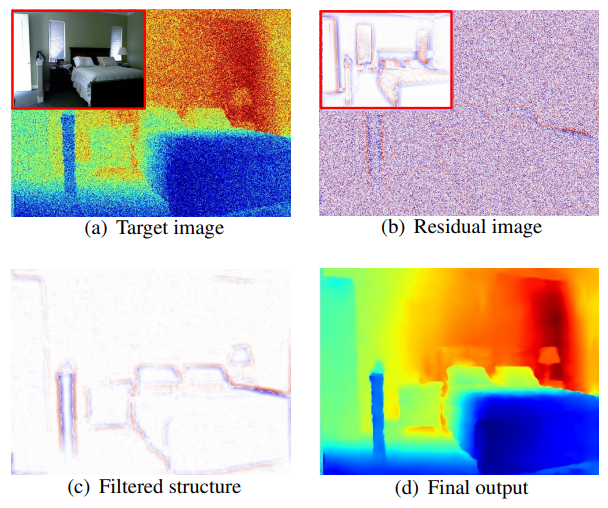
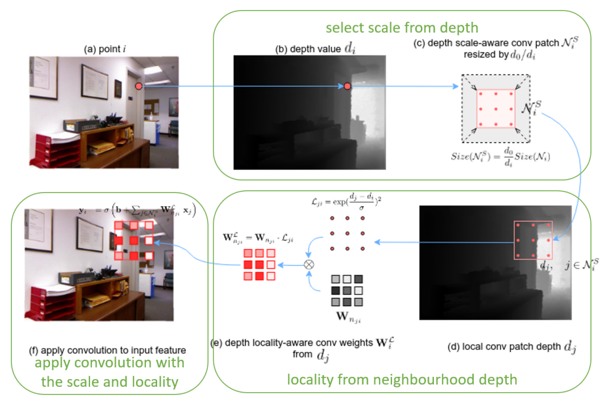

Yunlu Chen
3D deep learning
Google Scholar
Contact: ychen9201 AT gmail.com
Bio
I am a final-year PhD student at University of Amsterdam
(UvA), working on 3D deep learning.
I am grateful to be supervised by Efstratios Gavves, Thomas
Mensink and Arnold
Smeulders at UvA. I also received guidance from some great
external senior researchers: Basura Fernando
(A*STAR, Singapore), Hakan Bilen
(University of Edinburgh), and Matthias
Nießner (Technical University of Munich) that collaborated
in my research projects.
Prior to my Ph.D., I obtained my B.Sc. in Physics from Fudan
University, China, and my M.Sc. (cum laude) in Artificial
Intelligence from Utrecht University, the Netherlands.
Research
My research lies at the intersection of deep learning and 3D computer vision. I build deep learning models for different 3D modalities. Some prior projects include monocular depth estimation, RGB-D semantic segmentation, and augmentation for point cloud recognition.
My recent projects focus on the fascinating field of neural implicit 3D representations, with the sense of continuity in the 3D Euclidean space that we live in. Some interesting highlights of my research in this direction are the observation of the emerging layer hierarchy and correspondence in the latent-coded implicit functions, as well as the improved generalization to unseen similarity transformations by leveraging the graph embedding and the inductive prior of equivariance.
Papers
|
|
3D Equivariant Graph Implicit Functions ECCV 2022 We propose a novel family of graph-based 3D implicit representations. The non-Euclidean graph embeddings in multiple-scales enable modeling of high-fidelity 3D geometric details and facilitate inherent robustness against geometric transformations. We further incorporate equivariant graph layers for guaranteed generalization to unseen similarity transformations, including rotation, translation, and scaling. |
|
 |
Neural Feature Matching in Implicit
3D Representations We observe the emerging structure in implicit representation model layers: early layers reconstruct the coarse shape outline, and deeper layers refine finer details. We additionally show that hidden features in implicit representations learns high-level semantic concepts without supervision, which further allows applications for point matching and deformation between shapes with different semantic components and topology. |
|
 |
Unsharp Mask Guided Filtering TIP 2021 We propose a guided image filtering network that predicts high-frequency residuals from the low-pass filtered input signals, resulting in state-of-the-art results across filtering tasks like upsampling, denoising, and cross-modality filtering. |
|
|
PointMixup: Augmentation for Point
Cloud ECCV 2020 (spotlight) We developed PointMixup, a novel augmentation and regularization for point clouds. We analyse the mathematical properties of the shortest-path interpolation wrt Earth Mover's Distance, which explains the effectiveness of the proposed method. |
|
 |
3D Neighborhood Convolution:
Learning Depth-Aware Features for RGB-D and RGB
Semantic Segmentation 3DV 2019 We incorporate depth channel information into 2D network without using a separate stream. Depth information is used to adjust the receptive field of the 2D convolution kernel to be similar to a local 3D neighbourhood. |